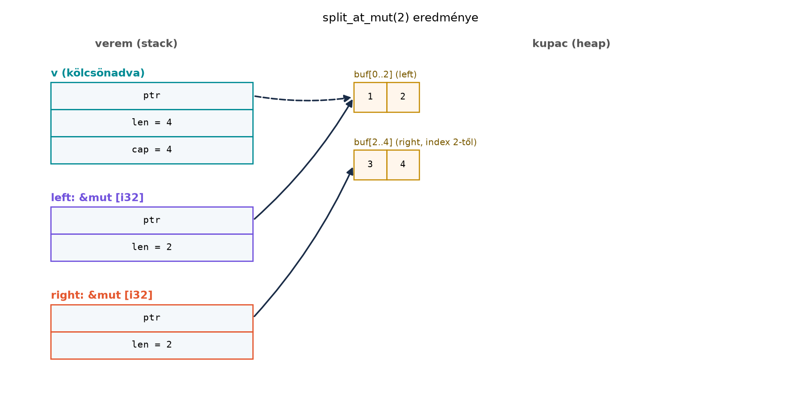
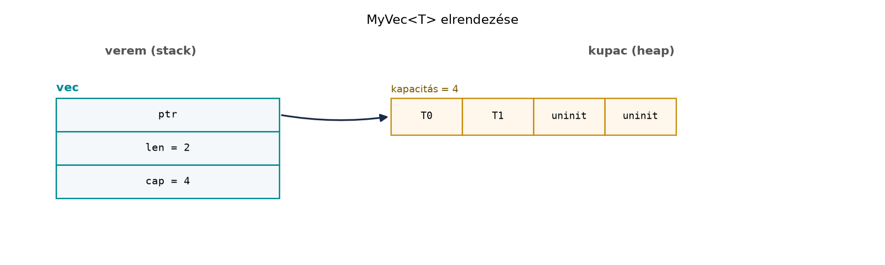

A C++-ban a std::vector is biztonságosnak tűnő API-t ad,
de a háttérben nyers mutatókkal, allokátorokkal és kézi
élettartam-kezeléssel dolgozik. Ha egy C++-programozó saját konténert,
hatékony szeletelő függvényt vagy lock-free adatszerkezetet ír, a
felelősség általában szétszóródik az egész kódban: a fordító nem jelzi,
ha egy reinterpret_cast vagy pointer-aritmetika megszeg egy
aliasing-szabályt. A Rust ezt a határt szándékosan a modulhatárra teszi.
A Vec, a slice::split_at_mut és a
Mutex mind biztonságos publikus felületet adnak, de a
belsejükben célzott unsafe blokkok vannak. Ez az alfejezet
azt mutatja meg, hogyan kell ilyen absztrakciót építeni: nem „minél
kevesebb unsafe”, hanem az unsafe blokkokat körülvevő, pontosan
dokumentált invariánsok a lényeg.
Definíció (biztonságos absztrakció, safe
abstraction). Egy publikus API biztonságos, ha minden
lehetséges, csak biztonságos Rust-kóddal történő hívása mentes az
undefined behaviourtől (UB). Az UB megelőzése kizárólag az API mögötti,
ellenőrzött unsafe blokkok feladata.
Definíció (soundness). Egy függvény akkor
sound, ha nincs olyan bemenet vagy programállapot, amelyre a
biztonságos hívást követően UB következhet. Egy unsafe fn
esetén a dokumentált előfeltételek betartása a hívó felelőssége; egy
biztonságos fn esetén a hívó semmilyen módon nem szegheti
meg az invariánst.
Szabály. Minden unsafe blokkban a
programozó felel azért, hogy a blokkban hívott unsafe
műveletek dokumentált előfeltételei teljesüljenek. Ezt a blokk előtt
// SAFETY: kommenttel kell indokolni. A kommentnek a
konkrét invariánsokra kell hivatkoznia, nem elég annyi, hogy
„biztonságos”.
Szabály. A safe fn nem teheti a hívót
UB-ért felelőssé. Ha egy függvény előfeltétele a hívó által betartandó
(például az index egy érvénytelenített pointerre mutat), akkor a
függvényt unsafe fn-ként kell deklarálni, és a
dokumentációban # Safety szakaszban fel kell tüntetni a
feltételeket. A split_at_mut viszont biztonságos, mert a
mid <= len feltételt az assert! ellenőrzi.
Az unsafe fn tehát csak az olyan ellenőrizetlen biztonsági
előfeltételekre való, amelyeket a függvény maga nem tud
kikényszeríteni.
A split_at_mut határeseteit Miri alatt is lefuttattuk:
üres slice, mid == 0, mid == len, nulla méretű
elemtípus rendben lefutott; mid > len esetén biztonságos
panic keletkezik, mid <= slice.len() üzenettel (nem
UB).
A clippy undocumented_unsafe_blocks lintje
(alapértelmezés szerint nem aktív,
#![warn(clippy::undocumented_unsafe_blocks)]-kel
kapcsolható be) figyelmeztet, ha egy unsafe blokk előtt
hiányzik a SAFETY komment; a 2024-es editionben az
unsafe fn-ek belsejében is explicit unsafe
blokk szükséges az unsafe_op_in_unsafe_fn lint miatt
(ellenőrzési igénnyel: a pontos viselkedés edition- és verziófüggő).
A C++20 std::span segítségével is készíthetünk szeletelő
függvényt, de a biztonsági garancia más:
#include <cassert>
#include <span>
#include <utility>
#include <vector>
template<class T>
std::pair<std::span<T>, std::span<T>>
split(std::vector<T>& v, std::size_t mid) {
assert(mid <= v.size());
std::span<T> s(v);
return {s.subspan(0, mid), s.subspan(mid)};
}Ez a kód határellenőrzést végez, de a visszaadott
span-ek mögött a v továbbra is elérhető és
módosítható. Ha a hívó a split után
v.push_back-et hív, a spánok invalidálódhatnak, és a
fordító nem szól. A Rust-megfelelő:
pub fn split_at_mut<T>(slice: &mut [T], mid: usize) -> (&mut [T], &mut [T]) {
assert!(mid <= slice.len());
let len = slice.len();
let ptr = slice.as_mut_ptr();
unsafe {
// SAFETY: mid <= len, ezért a [0, mid) és [mid, len) intervallumok
// diszjunktak és lefedik a teljes slice-ot. A ptr a slice első
// elemére mutat, a slice elemei inicializáltak, és a &mut slice
// kizárólagos hozzáférést ad a függvény hívása alatt.
let left = std::slice::from_raw_parts_mut(ptr, mid);
let right = std::slice::from_raw_parts_mut(ptr.add(mid), len - mid);
(left, right)
}
}A Rust-változat lefoglalja az eredeti &mut [T]-t: a
visszaadott két kölcsönzés élettartama alatt a fordító megakadályozza,
hogy bárki újra elérje az eredeti slice-ot. Ez az aliasing-szabály nem a
fejlesztő fegyelmén, hanem a típusrendszeren alapul.
split_at_mut újraimplementálásaA standard könyvtár slice::split_at_mut je pontosan ezt
a mintát követi. Nézzük először a hibás változatot:
pub fn split_at_mut_bad<T>(slice: &mut [T], mid: usize) -> (&mut [T], &mut [T]) {
let len = slice.len();
let ptr = slice.as_mut_ptr();
unsafe {
// Nincs ellenőrzés: ha mid > len, ptr.add(mid) túlmutat, len - mid
// alulcsordul, a from_raw_parts_mut érvénytelen tartományt kap.
let left = std::slice::from_raw_parts_mut(ptr, mid);
let right = std::slice::from_raw_parts_mut(ptr.add(mid), len - mid);
(left, right)
}
}Ez a változat lefordul, de mid > len esetén UB-t
okoz. A biztonságos függvényben az assert! ezt kizárja. A
javított kódot fentebb már láttuk; a kulcsmondat a
// SAFETY: kommentben az, hogy a mid <= len
feltétel miatt a két rész diszjunkt, ezért nem sérül az egyidejű
&mut kizárólagosság.
Így tesztelhetjük egy laborban:
mkdir -p ~/rust-labor/r043 && cd ~/rust-labor/r043
cargo new split_lab && cd split_labA src/main.rs tartalma:
fn split_at_mut<T>(slice: &mut [T], mid: usize) -> (&mut [T], &mut [T]) {
assert!(mid <= slice.len());
let len = slice.len();
let ptr = slice.as_mut_ptr();
unsafe {
// SAFETY: az assert! miatt mid <= len, így a [0, mid) és [mid, len)
// diszjunkt, a slice-on belüli tartományok; ptr a &mut slice
// kizárólagos hozzáférésén alapul, az elemek inicializáltak.
let left = std::slice::from_raw_parts_mut(ptr, mid);
let right = std::slice::from_raw_parts_mut(ptr.add(mid), len - mid);
(left, right)
}
}
fn main() {
let mut v = vec![1, 2, 3, 4];
let (a, b) = split_at_mut(&mut v, 2);
a[0] += 10;
b[1] *= 2;
println!("{a:?} {b:?}");
}Várt kimenet:
[11, 2] [3, 8]Az alábbi ábra szemléltető modell: egyetlen kupacpuffert
mutat két szomszédos tartományra bontva, mert a left és a
right ugyanannak a négyelemű pufferének két, nem átfedő
részére mutat. A [1, 2, 3, 4] adaton
split_at_mut(2) után left = [1, 2] (az
0..2 indexek), right = [3, 4] (a
2..4 indexek); a right pointere tehát a
harmadik elemre (a 2-es indexre) mutat, nem a puffer
elejére:

A két tartomány diszjunkt, ezért mindkettőre egyszerre adható
&mut referencia. A v-t a kölcsönzés
idejére érvénytelenné teszi a borrow checker (szaggatott nyíl).
MyVec vázlatA Vec teljes implementációja túlmutat ezen az
alfejezeten, de egy egyszerű vázlat jól mutatja, hogyan kerülnek az
invariánsok a unsafe blokkok köré. A
MyVec<T> három mezővel bír: egy
NonNull<T> pointer, egy len és egy
cap.
use std::alloc::{self, Layout};
use std::mem;
use std::ptr::{self, NonNull};
pub struct MyVec<T> {
ptr: NonNull<T>,
len: usize,
cap: usize,
}
impl<T> MyVec<T> {
pub fn new() -> Self {
// Nulla méretű típusnál (ZST) nincs mit allokálni: a kapacitás
// „végtelen”, a pointer végig dangling marad.
let cap = if mem::size_of::<T>() == 0 { usize::MAX } else { 0 };
Self { ptr: NonNull::dangling(), len: 0, cap }
}
pub fn push(&mut self, value: T) {
if self.len == self.cap {
self.grow();
}
unsafe {
// SAFETY: len < cap, ezért a ptr.offset(len) az allokált pufferen
// belül van; a célhely inicializálatlan, így write biztonságos.
self.ptr.as_ptr().add(self.len).write(value);
}
self.len += 1;
}
fn grow(&mut self) {
// ZST-nél cap == usize::MAX, így ide csak len == usize::MAX esetén
// jutunk: ez kapacitás-túlcsordulás, nem allokációs igény.
assert!(mem::size_of::<T>() != 0, "capacity overflow");
let new_cap = if self.cap == 0 { 4 } else { self.cap.checked_mul(2).expect("capacity overflow") };
// Az unwrap pánikol, ha a bájtméret meghaladná az isize::MAX-ot.
let new_layout = Layout::array::<T>(new_cap).unwrap();
let new_ptr = if self.cap == 0 {
unsafe {
// SAFETY: size_of::<T>() > 0 (fent ellenőriztük) és new_cap >= 4,
// ezért new_layout.size() > 0: az alloc nulla méretű kéréssel
// nem hívható.
let p = alloc::alloc(new_layout) as *mut T;
if p.is_null() {
alloc::handle_alloc_error(new_layout);
}
p
}
} else {
let old_layout = Layout::array::<T>(self.cap).unwrap();
unsafe {
// SAFETY: a self.ptr ezzel a old_layout-tal lett allokálva;
// a realloc megtartja az elemeket, a régi pointert nem
// használjuk többé.
let p = alloc::realloc(
self.ptr.as_ptr() as *mut u8,
old_layout,
new_layout.size(),
) as *mut T;
if p.is_null() {
alloc::handle_alloc_error(new_layout);
}
p
}
};
self.ptr = NonNull::new(new_ptr).unwrap();
self.cap = new_cap;
}
}
impl<T> Drop for MyVec<T> {
fn drop(&mut self) {
unsafe {
// SAFETY: a [0, len) elemek érvényesek, inicializáltak, és
// mindegyik pontosan egyszer kerül dropolásra.
ptr::drop_in_place(ptr::slice_from_raw_parts_mut(self.ptr.as_ptr(), self.len));
}
// ZST-nél soha nem allokáltunk, ezért nincs mit felszabadítani.
if self.cap != 0 && mem::size_of::<T>() != 0 {
let layout = Layout::array::<T>(self.cap).unwrap();
unsafe {
// SAFETY: a pointert ezzel a layouttal allokáltuk, az elemek
// már droppolva vannak, a dealloc felszabadítja a memóriát.
alloc::dealloc(self.ptr.as_ptr() as *mut u8, layout);
}
}
}
}A MyVec belső invariánsai:
size_of::<T>() > 0: ptr vagy
dangling (cap == 0), vagy egy
Layout::array::<T>(cap) elrendezéssel kapott, élő
allokáció kezdőcíme;T nulla méretű típus (ZST, például ()):
cap == usize::MAX, a ptr mindig dangling,
allokáció és dealloc soha nem történik;len <= cap;[0, len) tartomány inicializált elemeket tartalmaz, a
többi memória inicializálatlan; a Drop pontosan ezt a
len darab elemet droppolja, egyszer. ZST-nél is: a
drop_in_place a dangling, de igazított pointeren
len darab nulla méretű elemet droppol, ami
megengedett.A ZST-k külön kezelése nem szőrszálhasogatás. A
Layout::array::<()>(4).size() értéke 0,
a GlobalAlloc::alloc szerződése pedig tiltja a nulla méretű
kérést: a new_cap puszta növelése nem ad pozitív
bájtméretet. Az ellenőrzés nélküli változatban egy teljesen safe
MyVec::<()>::new().push(()) hívás UB-t váltana ki. A
választott megoldás ugyanaz, mint a std Vec-é (lásd a
Rustonomicon „Handling Zero-Sized Types” fejezetét). A másik sound
lehetőség az, hogy a new elején
assert!(size_of::<T>() != 0) utasítja el a ZST-t;
ekkor ezt a dokumentációban rögzíteni kell. Az elfogadási teszt:
MyVec::<()> push/pop, valamint egy
Drop-számláló ZST-vel a droppolások száma,
cargo +nightly miri test alatt is. A vázlatot
String elemekkel (push, többszöri növekedés, drop) és
ZST-vel is lefuttattuk cargo +nightly miri test-tel, a
három teszt hibátlanul lefutott.
A vázlat korlátai. A MyVec nem
panic-biztos: ha a növekedés vagy a drop_in_place közben
panic történik, a memória elszivárog (nincs őrszerkezet, ami ezt
kezelné). A teljes Vec ezt külön őrszerkezetekkel kezeli,
ez a vázlat nem.
A push növekedésnél realloc-ot használ, ami
bitmásolásként mozgatja az elemeket, ha a blokk költözik. Ez azért
érvényes, mert a T Rustban mozgatható; a régi helyet nem
droppoljuk külön. A Drop megvalósításban a
drop_in_place a teljes [0, len) szeletre
droppol, a dealloc pedig a memóriát szabadítja fel.
Az alábbi ábra a MyVec memóriafoglalását mutatja:

Továbbvitt eredmény. A soundness és a
// SAFETY: dokumentáció itt bemutatott mintája az alapja a
C ABI: extern “C”, repr(C), bindgen és cbindgen
alfejezetnek, ahol a C-ből hívott függvények előfeltételeit kell
dokumentálni, valamint a no_std, embedded-hal és
Embassy: Rust mikrovezérlőn alfejezet hardverközeli
absztrakcióinak.
unsafe a függvény aláírásában, amikor nem a
hívó felel. A MyVec::push biztonságos, mert a hívó
bármilyen T-vel – nulla méretű típussal is – hívhatja; a
kapacitást és a ZST-esetet a típus maga kezeli. Ha a hívónak kellene
betartania valamilyen előfeltételt, akkor unsafe fn és
# Safety szakasz kell.SAFETY komment. A
// SAFETY: biztonságos nem dokumentál semmit. Minden
kommentnek a konkrét invariánsra kell hivatkoznia: például
„mid <= len, ezért a két tartomány diszjunkt”, vagy „a
célhely inicializálatlan”.unsafe blokkok túlméretezése. Ha egy
unsafe blokk sok műveletet tartalmaz, nehéz ellenőrizni az
invariánst. A cél az, hogy a blokk pontosan a unsafe hívás
köré szűküljön.memcpy-gondolkodás.
Rustban a ptr::copy_nonoverlapping és a
ptr::read/write is unsafe; a
C++-ból ismert memcpy bitmásolás nem mindig elég, ha a
típusnak Drop implementációja van, mert a régi helyet nem
szabad újra droppolni.split_at_mut annak
ellenére, hogy belül unsafe blokk van? Mi történne, ha
unsafe fn-ként deklarálnánk?split függvényt idiomatikus Rustra
úgy, hogy a hívó a visszaadott két szeletet egyidejűleg módosíthassa, és
az állapot-invalidálás fordítási időben ki legyen zárva.MyVec<T> vázlatot egy
pop metódussal, amely Option<T>-t ad
vissza, és egy len metódussal. Írj hozzá
SAFETY kommentet.MyVec-hez publikus
set_len(&mut self, new_len: usize) metódust akarunk
adni. Miért nem lehet ezt biztonságos függvényként kitenni? Hogyan
kellene unsafe fn-ként dokumentálni a # Safety
szakaszban?split_at_mut biztonságos, mert a
mid <= len feltételt az assert! ellenőrzi,
így a hívó semmilyen módon nem tud UB-t előidézni. Ha
unsafe fn-ként deklarálnánk, a hívónak kellene bizonyítania
a feltételt, és a hívás helyén unsafe blokk kellene. Ez
rontaná az ergonómiát, és feleslegesen terjesztené az unsafe-et.split_at_mut; a hívó a
let (a, b) = split_at_mut(&mut v, 2); után
a-t és b-t módosíthatja, de v-t
nem használhatja, amíg a és b él. A fordító
ezt enforce-olja.pop implementáció:pub fn pop(&mut self) -> Option<T> {
if self.len == 0 {
None
} else {
self.len -= 1;
unsafe {
// SAFETY: a self.len csökkentése után a korábbi len-1 indexű elem
// érvényes, inicializált, és a MyVec invariáns szerint a MyVec
// birtokolja. A read bitmásolja az értéket, a régi helyet nem
// droppoljuk, mert a len már nem tartalmazza.
Some(self.ptr.as_ptr().add(self.len).read())
}
}
}A len metódus triviálisan self.len. 4. (d)
A publikus set_len veszélyes, mert a hívó
new_len > cap értéket is beállíthat, ami későbbi
olvasásnál inicializálatlan memóriához vagy deallokáció utáni
hozzáféréshez vezet. Ha mégis szükséges, unsafe fn-ként
kell kitenni:
/// Beállítja a vektort `new_len` eleműre.
///
/// # Safety
///
/// A hívó köteles biztosítani, hogy:
/// - `new_len <= self.cap`, és
/// - a `[len, new_len)` tartomány minden eleme inicializált.
pub unsafe fn set_len(&mut self, new_len: usize) {
self.len = new_len;
}A biztonságos absztrakció lényege, hogy a safe fn soha
nem okozhat UB-t, függetlenül a hívótól. Az UB-ért felelős kódot célzott
unsafe blokkokba zárjuk, és minden blokk előtt
// SAFETY: kommenttel indokoljuk, melyik invariáns miért
teljesül. A split_at_mut példája megmutatja, hogy egy
assert! hogyan teszi biztonságossá a pointer-aritmetikát; a
MyVec<T> vázlat pedig bemutatja, hogyan tartja
nyilván a len <= cap és az inicializáltság invariánsait
a push és a Drop implementációja. A soundness
fogalma és a # Safety dokumentáció továbbvitelre kerül a C
ABI-hoz és a beágyazott absztrakciókhoz.
unsafe blokkokra és UB-listára
vonatkozó fejezetei a doc.rust-lang.org-on elérhetők, de a
pontos szakaszok verziófüggők.std::alloc és
std::slice::from_raw_parts_mut dokumentációja a docs.rs-en
ellenőrizhető a konkrét stable toolchainre.undocumented_unsafe_blocks lintje
alapértelmezés szerint nem aktív, bekapcsolása
#![warn(clippy::undocumented_unsafe_blocks)] vagy a
clippy.toml/parancssor útján történik; az
unsafe_op_in_unsafe_fn a 2024-es editionben figyelmeztet. A
példakódok a rögzített Rust 1.99.1 (2024-es edition) szerint
készültek.